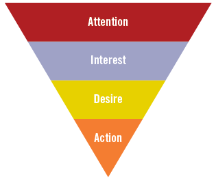

I denne lektion lærte vi om det håndværk at skrive tekster til forskellige platforme. At skrive tekster kræver forståelse for målgruppen og den rette strategi. I dette afsnit vil vi komme igennem flere forskellige typer af medier:
Artiklen:Man lærer at afkode og bruge skelettet til en klassisk artikelstruktur.
Brochuren: Man får en indsigt i, at det handler om at kunne forstå, hvad der skal med og hvad der skal sorteres fra, dvs. brug af informationsstruktur.
Annoncen: Man lærer om den traditionelle opbygning af en annonce. Det inkluderer ikke kun tekstlige dele, men også lidt grundlæggende, visual design teori.
Tekster til web (inklusiv mobile medier): Her er alt meget anderledes i forhold til den klassiske artikel, for her lærer du om interaktion, brugeroplevelser og god service for den travle læser. Denne del vil også indeholde en smule gode designprincipper for organiseringen af web-indhold.
Sociale medietekster: Man får en metode til at kunne navigere i det spontane univers af sociale medier, hvor man ofte skal skrive med målgruppen og være hurtig på tasterne. Det her område er svært at opsætte alt for faste metoder og modeller for, da det ofte er lidt intuitivt og præget af spontanitet. (anne mette busch kommunikation i multimediedesign, 2015, side 235)
Nyhedskriterier
Inden for artiklerne som tekstproduktion, så er der et område som vi kalder for nyhedskriterier. Den gode historie er menneskeskabt af professionelle kommunikatører, som udvælger og prioriterer stof ud fra forskellige kriterier. Der er tale om 5 nyhedskriterier og jo flere kriterier en given tekst lever op til, jo mere relevant er den for målgruppen:
Væsentlighed: Er der tale om en væsentlig nyhed?
Sensation: Er det sensational? Det klassiske eksempel er “Mand bider hund” hvor “hund bider mand” typisk ikke er en sensation.
Konflikt : Ligger der en konflikt gemt, som er værd at grave i?
Identifikation: Kan læseren identificere sig med indholdet?
Aktualitet: Er det reelt set aktuelt og vigtigt nu og her?
Hvis det er man bruger disse nyhedskriterier, når man skal skabe indhold, så får man 3 ting ud af det:
Kvalitet
Bedre indhold, der rammer målgruppen og skaber værdi
Delinger
Flere links og sociale delinger
Links
Mere trafik som følge af links (anne mette nusch kommunikation i multimediedesign, 2015, side 236 & 237)
Nyheds trekanten
Ud over denne måde at skrive artikler, er der også flere måder at bruge tekstproduktion. Nogle af disse modeller man ofte tager i brug i tekstproduktion er f.eks. Nyhedstrekanten og AIDA-modellen. Nyhedstrekanten er en model, der bliver brugt til at kunne skabe et nemt og hurtigt overblik på strukturen af en nyhed. Nødvendigvis i en artikel behøves man ikke at læse alt, for at kunne nå frem til en konklusion. Man prioritere altså de vigtigste nyheder først og de understøttende detaljer til sidst.
Når det er du feks. skal reklamere for noget i en annonce, salgs opslag, plakater osv. så kan man benytte sig af AIDA-modellen. Når man skriver en annonce, så er det første man vil gøre, at skabe opmærksomhed (attention) Hvilket mest typisk bliver gjort enten ved et billede eller en god overskrift. Hvis det er budskabet, der skaber opmærksomhed nok ved forbrugeren, så vil det føre til en interesse (Interest) hvorefter det vil føre til et ønske (desire) om at eje produktet. Det sidste punkt, som reelt får modtageren af budskabet til at handle (action), dvs. at købe budskabet. Action er også det, man kalder for call to action, som betyder hvad målgruppen kan gøre, tænke og føle, når de ser en annonce. Det behøves nødvendigvis ikke at være en annonce til at købe noget, men det kan være til et andet formål, så som at være miljøbevidst, donére blod, være sikker i trafikken osv. (anne mette nusch kommunikation i multimediedesign, 2015, side 245)
Aida-modellen